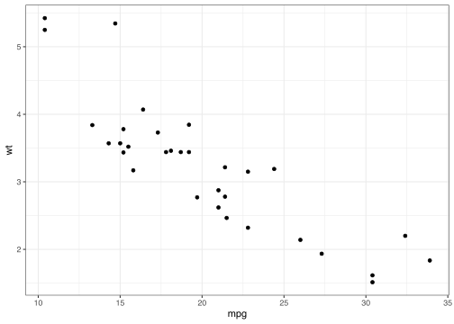
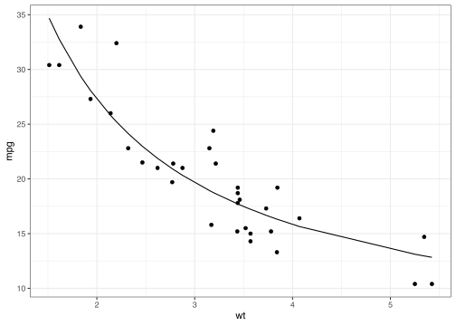
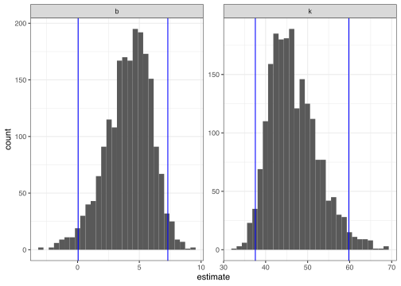

Introduction
To use the code in this article, you will need to install the following packages: tidymodels and tidyr.
Combining fitted models in a tidy way is useful for performing bootstrapping or permutation tests. These approaches have been explored before, for instance by Andrew MacDonald here, and Hadley has explored efficient support for bootstrapping as a potential enhancement to dplyr. The tidymodels package broom fits naturally with dplyr in performing these analyses.
Bootstrapping consists of randomly sampling a data set with replacement, then performing the analysis individually on each bootstrapped replicate. The variation in the resulting estimate is then a reasonable approximation of the variance in our estimate.
Let’s say we want to fit a nonlinear model to the weight/mileage relationship in the mtcars data set.
library(tidymodels)
ggplot(mtcars, aes(mpg, wt)) +
geom_point()

We might use the method of nonlinear least squares (via the nls() function) to fit a model.
nlsfit <- nls(mpg ~ k / wt + b, mtcars, start = list(k = 1, b = 0))
summary(nlsfit)
#>
#> Formula: mpg ~ k/wt + b
#>
#> Parameters:
#> Estimate Std. Error t value Pr(>|t|)
#> k 45.83 4.25 10.79 7.6e-12 ***
#> b 4.39 1.54 2.85 0.0077 **
#> ---
#> Signif. codes: 0 '***' 0.001 '**' 0.01 '*' 0.05 '.' 0.1 ' ' 1
#>
#> Residual standard error: 2.77 on 30 degrees of freedom
#>
#> Number of iterations to convergence: 1
#> Achieved convergence tolerance: 2.88e-08
ggplot(mtcars, aes(wt, mpg)) +
geom_point() +
geom_line(aes(y = predict(nlsfit)))

While this does provide a p-value and confidence intervals for the parameters, these are based on model assumptions that may not hold in real data. Bootstrapping is a popular method for providing confidence intervals and predictions that are more robust to the nature of the data.
Bootstrapping models
We can use the bootstraps() function in the rsample package to sample bootstrap replications. First, we construct 2000 bootstrap replicates of the data, each of which has been randomly sampled with replacement. The resulting object is an rset, which is a data frame with a column of rsplit objects.
An rsplit object has two main components: an analysis data set and an assessment data set, accessible via analysis(rsplit) and assessment(rsplit) respectively. For bootstrap samples, the analysis data set is the bootstrap sample itself, and the assessment data set consists of all the out-of-bag samples.
set.seed(27)
boots <- bootstraps(mtcars, times = 2000, apparent = TRUE)
boots
#> # Bootstrap sampling with apparent sample
#> # A tibble: 2,001 x 2
#> splits id
#> <list> <chr>
#> 1 <split [32/13]> Bootstrap0001
#> 2 <split [32/10]> Bootstrap0002
#> 3 <split [32/13]> Bootstrap0003
#> 4 <split [32/11]> Bootstrap0004
#> 5 <split [32/9]> Bootstrap0005
#> 6 <split [32/10]> Bootstrap0006
#> 7 <split [32/11]> Bootstrap0007
#> 8 <split [32/13]> Bootstrap0008
#> 9 <split [32/11]> Bootstrap0009
#> 10 <split [32/11]> Bootstrap0010
#> # … with 1,991 more rows
Let’s create a helper function to fit an nls() model on each bootstrap sample, and then use purrr::map() to apply this function to all the bootstrap samples at once. Similarly, we create a column of tidy coefficient information by unnesting.
fit_nls_on_bootstrap <- function(split) {
nls(mpg ~ k / wt + b, analysis(split), start = list(k = 1, b = 0))
}
boot_models <-
boots %>%
mutate(model = map(splits, fit_nls_on_bootstrap),
coef_info = map(model, tidy))
library(tidyr)
boot_coefs <-
boot_models %>%
unnest(coef_info)
The unnested coefficient information contains a summary of each replication combined in a single data frame:
boot_coefs
#> # A tibble: 4,002 x 8
#> splits id model term estimate std.error statistic p.value
#> <list> <chr> <lis> <chr> <dbl> <dbl> <dbl> <dbl>
#> 1 <split [32/13… Bootstrap00… <nls> k 42.1 4.05 10.4 1.91e-11
#> 2 <split [32/13… Bootstrap00… <nls> b 5.39 1.43 3.78 6.93e- 4
#> 3 <split [32/10… Bootstrap00… <nls> k 49.9 5.66 8.82 7.82e-10
#> 4 <split [32/10… Bootstrap00… <nls> b 3.73 1.92 1.94 6.13e- 2
#> 5 <split [32/13… Bootstrap00… <nls> k 37.8 2.68 14.1 9.01e-15
#> 6 <split [32/13… Bootstrap00… <nls> b 6.73 1.17 5.75 2.78e- 6
#> 7 <split [32/11… Bootstrap00… <nls> k 45.6 4.45 10.2 2.70e-11
#> 8 <split [32/11… Bootstrap00… <nls> b 4.75 1.62 2.93 6.38e- 3
#> 9 <split [32/9]> Bootstrap00… <nls> k 43.6 4.63 9.41 1.85e-10
#> 10 <split [32/9]> Bootstrap00… <nls> b 5.89 1.68 3.51 1.44e- 3
#> # … with 3,992 more rows
Confidence intervals
We can then calculate confidence intervals (using what is called the percentile method):
percentile_intervals <- int_pctl(boot_models, coef_info)
percentile_intervals
#> # A tibble: 2 x 6
#> term .lower .estimate .upper .alpha .method
#> <chr> <dbl> <dbl> <dbl> <dbl> <chr>
#> 1 b 0.0475 4.12 7.31 0.05 percentile
#> 2 k 37.6 46.7 59.8 0.05 percentile
Or we can use histograms to get a more detailed idea of the uncertainty in each estimate:
ggplot(boot_coefs, aes(estimate)) +
geom_histogram(bins = 30) +
facet_wrap( ~ term, scales = "free") +
geom_vline(aes(xintercept = .lower), data = percentile_intervals, col = "blue") +
geom_vline(aes(xintercept = .upper), data = percentile_intervals, col = "blue")

The rsample package also has functions for other types of confidence intervals.
Possible model fits
We can use augment() to visualize the uncertainty in the fitted curve. Since there are so many bootstrap samples, we’ll only show a sample of the model fits in our visualization:
boot_aug <-
boot_models %>%
sample_n(200) %>%
mutate(augmented = map(model, augment)) %>%
unnest(augmented)
boot_aug
#> # A tibble: 6,400 x 8
#> splits id model coef_info mpg wt .fitted .resid
#> <list> <chr> <lis> <list> <dbl> <dbl> <dbl> <dbl>
#> 1 <split [32/11… Bootstrap1644 <nls> <tibble [2 × 5… 16.4 4.07 15.6 0.829
#> 2 <split [32/11… Bootstrap1644 <nls> <tibble [2 × 5… 19.7 2.77 21.9 -2.21
#> 3 <split [32/11… Bootstrap1644 <nls> <tibble [2 × 5… 19.2 3.84 16.4 2.84
#> 4 <split [32/11… Bootstrap1644 <nls> <tibble [2 × 5… 21.4 2.78 21.8 -0.437
#> 5 <split [32/11… Bootstrap1644 <nls> <tibble [2 × 5… 26 2.14 27.8 -1.75
#> 6 <split [32/11… Bootstrap1644 <nls> <tibble [2 × 5… 33.9 1.84 32.0 1.88
#> 7 <split [32/11… Bootstrap1644 <nls> <tibble [2 × 5… 32.4 2.2 27.0 5.35
#> 8 <split [32/11… Bootstrap1644 <nls> <tibble [2 × 5… 30.4 1.62 36.1 -5.70
#> 9 <split [32/11… Bootstrap1644 <nls> <tibble [2 × 5… 21.5 2.46 24.4 -2.86
#> 10 <split [32/11… Bootstrap1644 <nls> <tibble [2 × 5… 26 2.14 27.8 -1.75
#> # … with 6,390 more rows
ggplot(boot_aug, aes(wt, mpg)) +
geom_line(aes(y = .fitted, group = id), alpha = .2, col = "blue") +
geom_point()

With only a few small changes, we could easily perform bootstrapping with other kinds of predictive or hypothesis testing models, since the tidy() and augment() functions works for many statistical outputs. As another example, we could use smooth.spline(), which fits a cubic smoothing spline to data:
fit_spline_on_bootstrap <- function(split) {
data <- analysis(split)
smooth.spline(data$wt, data$mpg, df = 4)
}
boot_splines <-
boots %>%
sample_n(200) %>%
mutate(spline = map(splits, fit_spline_on_bootstrap),
aug_train = map(spline, augment))
splines_aug <-
boot_splines %>%
unnest(aug_train)
ggplot(splines_aug, aes(x, y)) +
geom_line(aes(y = .fitted, group = id), alpha = 0.2, col = "blue") +
geom_point()

Session information
#> ─ Session info ───────────────────────────────────────────────────────────────
#> setting value
#> version R version 3.6.2 (2019-12-12)
#> os macOS Mojave 10.14.6
#> system x86_64, darwin15.6.0
#> ui X11
#> language (EN)
#> collate en_US.UTF-8
#> ctype en_US.UTF-8
#> tz America/Denver
#> date 2020-04-17
#>
#> ─ Packages ───────────────────────────────────────────────────────────────────
#> package * version date lib source
#> broom * 0.5.5 2020-02-29 [1] CRAN (R 3.6.0)
#> dials * 0.0.6 2020-04-03 [1] CRAN (R 3.6.2)
#> dplyr * 0.8.5 2020-03-07 [1] CRAN (R 3.6.0)
#> ggplot2 * 3.3.0 2020-03-05 [1] CRAN (R 3.6.0)
#> infer * 0.5.1 2019-11-19 [1] CRAN (R 3.6.0)
#> parsnip * 0.1.0 2020-04-09 [1] CRAN (R 3.6.2)
#> purrr * 0.3.3 2019-10-18 [1] CRAN (R 3.6.0)
#> recipes * 0.1.10 2020-03-18 [1] CRAN (R 3.6.0)
#> rlang 0.4.5 2020-03-01 [1] CRAN (R 3.6.0)
#> rsample * 0.0.6 2020-03-31 [1] CRAN (R 3.6.2)
#> tibble * 2.1.3 2019-06-06 [1] CRAN (R 3.6.2)
#> tidymodels * 0.1.0 2020-02-16 [1] CRAN (R 3.6.0)
#> tidyr * 1.0.2 2020-01-24 [1] CRAN (R 3.6.0)
#> tune * 0.1.0 2020-04-02 [1] CRAN (R 3.6.2)
#> workflows * 0.1.1 2020-03-17 [1] CRAN (R 3.6.0)
#> yardstick * 0.0.6 2020-03-17 [1] CRAN (R 3.6.0)
#>
#> [1] /Library/Frameworks/R.framework/Versions/3.6/Resources/library